전기공사산업기사 (2014-03-02 기출문제)
1과목: 전기응용
1. 목재의 건조, 베니어판 등의 합판에서의 접착 건조, 약품의 건조 등에 적합한 전기 건조 방식은?
- 고주파 건조
- 적외선 건조
- 자외선 건조
- 아크 건조
(정답률: 57%)

2. 전동기의 토크 단위는?
- [kg]
- [kg·m2]
- [kg·m]
- [kg·m/s]
(정답률: 79%)
3. 다음 사이리스터 중 2단자 양방향 소자는?
- SCR
- LASCR
- TRIAC
- DIAC
(정답률: 69%)
4. 전동기 절연물의 종별에서 허용온도 상승한도가 130[℃]인 것은 어느 것인가?
- Y종
- A종
- E종
- B종
(정답률: 78%)
5. 전극 및 용접부가 공기로부터 차단되어 산화방지 효과가 있는 용접은?
- 탄소아크
- 원자수소 용접
- 나금속 아크 용접
- 불활성가스 아크 용접
(정답률: 54%)
6. 알루미늄, 마그네슘의 용접에 가장 적합한 용접 방법은?
- 피복금속 아크용접
- 불꽃 용접
- 원자 수소용접
- 불활성가스 아크용접
(정답률: 72%)
7. 그림과 같이 광원 L에 의한 모서리 B의 조도가 20[lx]일 때, B로 향하는 방향의 광도[cd]는 약 얼마인가?
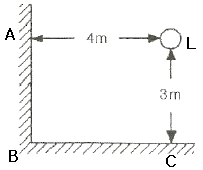
- 780
- 833
- 900
- 950
(정답률: 76%)
8. 서보 전동기(servo motor)는 서보기구에서 주로 어느 부의 기능을 맡는가?
- 검출부
- 제어부
- 비교부
- 조작부
(정답률: 73%)
9. 형광등의 광속이 감소하는 원인이 아닌 것은?
- 전극의 소모에 의한 열전자방출의 감소
- 램프 양단의 흑화 현상
- 형광체의 열화
- 형광등의 부특성
(정답률: 75%)
10. 고온도에 의한 환원으로 얻어진 조금속(粗金屬) 또는 정제금속을 주입한 것을 양극으로 하고 목적 금속과 동일한 금속염을 함유한 수용액을 전해액으로 전해하여 순도가 높은 금속을 얻는 방법은?
- 전해정제
- 전해채취
- 전기도금
- 전해연마
(정답률: 65%)
11. 반사율 ρ, 투과율 τ, 반지름 r인 완전확산성 구형글로브의 중심에 광도 I의 점광원을 켰을 때, 광속 발산도는?
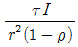
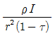
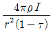
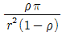
(정답률: 79%)
12. 유도가열의 용도에 가장 적합한 것은?
- 욕재의 접착
- 금속의 용접
- 금속의 열처리
- 비닐의 접착
(정답률: 76%)
13. 서미스터의 저항값이 감소한다는 것은 서미스터의 온도변화와 어떤 관계를 갖는가?
- 서미스터의 온도가 상승하고 있다.
- 서미스터의 온도가 낮아지고 있다.
- 서미스터의 온도는 변화가 없이 일정하다.
- 서미스터의 온도변화와 관련이 없다.
(정답률: 72%)
14. 사람의 눈이 가장 밝게 느낄 때의 최대시감도는 약 몇[lm/W]인가?
- 540
- 555
- 683
- 760
(정답률: 58%)
15. 교류식 전기철도에서 전압 불평형을 경감시키기 위해 사용되는 급전용 변압기는?
- 흡상 변압기
- 단권 변압기
- 크로스 결선 변압기
- 스코트 결선 변압기
(정답률: 63%)
16. 150[W] 백열전구를 반경 20[cm], 투과율 80[%]의 글로브 속에서 점등시켰을 때의 휘도 [sb]는 약 얼마인가? (단, 글로브의 반사는 무시하고 전구의 광속은 2450[lm]이라 한다.)
- 0.124
- 0.390
- 0.487
- 0.496
(정답률: 44%)
17. 전열기에서 발연선의 지름이 1[%] 감소하면 저항 및 발열량은 몇 [%] 증감되는가?
- 저항 2[%] 증가, 발열량 2[%] 감소
- 저항 2[%] 증가, 발열량 2[%] 증가
- 저항 4[%] 증가, 발열량 4[%] 감소
- 저항 4[%] 증가, 발열량 4[%] 증가
(정답률: 75%)
18. 광속에 대한 설명으로 옳은 것은?
- 가시범위의 방사속을 눈의 감도를 기준으로 측정한 것
- 하나의 점광원으로터 임의의 방향을 나타낸 것
- 단위 시간당 복사되는 에너지
- 피조면의 단위 면적당 입사되는 에너지
(정답률: 67%)
19. 블록선도에서 C/R는 얼마인가?
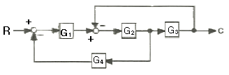
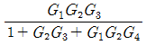
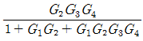
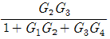
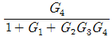
(정답률: 79%)
20. 복진방지(Anti-Creeper)방법으로 적당하지 않은 것은?
- 레일에 임피던스 본드를 설치한다.
- 철도용 못을 이용하여 레일과 침목간의 체결력을 강화 한다.
- 레일에 앵커를 부설한다.
- 침목과 침목을 연결하여 침목의 이동을 방지한다.
(정답률: 67%)
2과목: 전력공학
21. 전력용 퓨즈에 대한 설명 중 틀린 것은?
- 정전 용량이 크다.
- 차단 용량이 크다.
- 보수가 간단하다.
- 가격이 저렴하다.
(정답률: 49%)
22. 공기예열기를 설치하는 효과로 볼 수 없는 것은?
- 화로의 온도가 높아져 보일러의 증발량이 증가한다.
- 매연의 발생이 적어진다.
- 보일러 효율이 높아진다.
- 연소율이 감소한다.
(정답률: 43%)
23. 장거리 송전선에서 단위 길이당 임피던스 Z=R+jωL(Ω/km), 어드미턴스 Y=G+jωC(℧/km)라 할 때 저항과 누설 컨덕턴스를 무시하는 경우 특성임피던스의 값은?
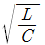

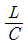
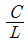
(정답률: 55%)
24. 영상변류기를 사용하는 계전기는?
- 과전류계전기
- 지락계전기
- 차동계전기
- 과전압계전기
(정답률: 47%)
25. 62000kW 의 전력을 60km 떨어진 지점에 송전하려면 전압은 약 몇 kV 로 하면 좋은가? (단, still 식을 사용한다.)
- 66
- 110
- 140
- 154
(정답률: 44%)
26. 계통 내의 각 기기, 기구 및 애자 등의 상호간에 적정한 절연강도를 지니게 함으로서 계통 설계를 합리적으로 하는 것은?
- 기준충격절연강도
- 절연협조
- 절연계급 선정
- 보호계전방식
(정답률: 55%)
27. 그림과 같은 배전선로에서 부하의 급전 시와 차단 시에 조작 방법 중 옳은 것은?
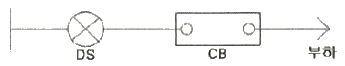
- 급전 시는 DS, CB 순이고, 차단 시는 CB, DS 순이다.
- 급전 시는 CB, DS 순이고, 차단 시는 DS, CB 순이다.
- 급전 및 차단 시 모두 DS, CB 순이다.
- 급전 및 차단 시 모두 CB, DS 순이다.
(정답률: 58%)
28. 옥내배선의 전압강하는 될 수 있는 대로 적게 해야 하지만 경제성을 고려하여 보통 다음 값 이하로 하고 있다. 옳은 것은?
- 인입선 1%, 간선 1%, 분기회로 2%
- 인입선 2%, 간선 2%, 분기회로 1%
- 인입선 1%, 간선 2%, 분기회로 3%
- 인입선 2%, 간선 1%, 분기회로 1%
(정답률: 45%)
29. 페란티 현상이 생기는 주된 원인으로 알맞은 것은?
- 선로의 인덕턴스
- 선로의 정전용량
- 선로의 누설컨덕턴스
- 선로의 저항
(정답률: 50%)
30. 중성점 접지방식 중 1선 지락고장일 때 전압상승이 최대이고, 통신장해가 최소인 것은?
- 비접지방식
- 직접접지방식
- 저항접지방식
- 소호리액터접지방식
(정답률: 41%)
31. 부하역률이 cosø 인 배전선로의 저항 손실은 같은 크기의 부하전력에서 역률 1일 때 저항손실의 몇 배인가?
- cos2ø
- cosø
- 1/cosø
- 1/cos2ø
(정답률: 44%)
32. 100kVA 단상변압기 3대로 3상 전력을 공급하던 중 변압기 1대가 고장 났을 때 공급가능 전력은 몇 kVA 인가?
- 200
- 100
- 173
- 150
(정답률: 56%)
33. 변압기의 보호방식에서 차동계전기는 무엇에 의하여 동작하는가?
- 정상전류와 역상전류의 차로 동작한다.
- 정상전류와 영상전류의 차로 동작한다.
- 전압과 전류의 배수의 차로 동작한다.
- 1, 2차 전류의 차로 동작한다.
(정답률: 48%)
34. 선간전압 3300V, 피상전력 330kVA, 역률 0.7인 3상 부하가 있다. 부하의 역률을 0.85로 개선하는데 필요한 전력용콘덴서의 용량은 약 몇 kVA 인가?
- 62
- 72
- 82
- 92
(정답률: 38%)
35. 철탑에서 전선의 오프셋을 주는 이유로 옳은 것은?
- 불평형 전압의 유도방지
- 상하 전선의 접촉방지
- 전선의 진동방지
- 지락사고 방지
(정답률: 51%)
36. 3상 송배전 선로의 공칭전압이란?
- 그 전선로를 대표하는 최고전압
- 그 전선로를 대표하는 평균전압
- 그 전선로를 대표하는 선간전압
- 그 전선로를 대표하는 상전압
(정답률: 52%)
37. 부하측에 밸런스를 필요로 하는 배전 방식은?
- 3상 3선식
- 3상 4선식
- 단상 2선식
- 단상 3선식
(정답률: 51%)
38. 345kV 송전계통의 절연협조에서 충격절연내력의 크기순으로 나열한 것은?
- 선로애자 ＞ 차단기 ＞ 변압기 ＞ 피뢰기
- 선로애자 ＞ 변압기 ＞ 차단기 ＞ 피뢰기
- 변압기 ＞ 차단기 ＞ 선로애자 ＞ 피뢰기
- 변압기 ＞ 선로애자 ＞ 차단기 ＞ 피뢰기
(정답률: 50%)
39. 무손실 송전선로에서 송전할 수 있는 송전용량은? (단, ES : 송전단 전압, ER : 수전단 전압, δ : 부하각, X : 송전선로의 리액턴스, R : 송전선로의 저항, Y : 송전선로의 어드미턴스 이다.)
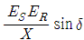
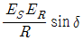
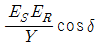
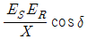
(정답률: 47%)
40. 3상 66kV의 1회선 송전선로의 1선의 리액턴스가 11Ω, 정격전류가 600A일 때, %리액턴스는?
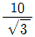
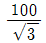
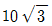
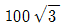
(정답률: 43%)
3과목: 전기기기
41. 제13차 고조파에 의한 회전자계의 회전방향과 속도를 기본파 회전자계와 비교할 때 옳은 것은?
- 기본파와 반대방향이고, 1/13의 속도
- 기본파와 동일방향이고, 1/13의 속도
- 기본파와 동일방향이고, 13배의 속도
- 기본파와 반대방향이고, 13배의 속도
(정답률: 41%)
42. 브러시 홀더(brush holder)는 브러시를 정류자면의 적당한 위치에서 스프링에 의하여 항상 일정한 압력으로 정류자면에 접촉하여야 한다. 가장 적당한 압력[kg/cm2]은?
- 0.01 ~ 0.15
- 0.1 ~ 1
- 0.15 ~ 0.25
- 1 ~ 2
(정답률: 58%)
43. 3상 동기기기의 제동권선을 사용하는 주 목적은?
- 출력이 증가한다.
- 효율이 증가한다.
- 역률을 개선한다.
- 난조를 방지한다.
(정답률: 55%)
44. 동기발전기의 병렬운전에서 기전력의 위상이 다른 경우, 동기화력(Ps)을 나타낸 식은? (단, P : 수수전력, δ : 상차각 이다.)
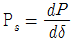
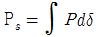
- Ps = P × cosδ
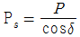
(정답률: 38%)
45. 220[V], 6극, 60[Hz], 10[kW]인 3상 유도전동기의 회전자 1상 저항은 0.1[Ω], 리액턴스는 0.5[Ω]이다. 정격전압을 가했을 때 슬립이 4[%]일 때 회전자 전류는 몇 [A]인가? (단, 고정자와 회전자는 △결선으로서 권수는 각각 300회와 150회이며, 각 권선계수는 같다.)
- 27
- 36
- 43
- 52
(정답률: 31%)
46. 계자저항 100[Ω], 계자전류 2[A], 전기자 저항이 0.2[Ω]이고, 무부하 정격속도로 회전하고 있는 직류 분권발전기가 있다 이때의 유기기전력[V]은?
- 196.2
- 200.4
- 220.5
- 320.2
(정답률: 52%)
47. 6극, 220[V]의 3상 유도전동기가 있다. 정격전압을 인가해서 기동시킬 때 기동토크는 전부하토크의 220[%]이다. 기동토크를 전부하토크의 1.5배로 하려면 기동전압[V]을 얼마로 하면 되는가?
- 163
- 182
- 200
- 220
(정답률: 38%)
48. 교류 전동기에서 브러시의 이동으로 속도변화가 가능한 것은?
- 농형 전동기
- 2중 농형 전동기
- 동기 전동기
- 시라게 전동기
(정답률: 54%)
49. 변압기의 임피던스 와트와 임피던스 전압을 구하는 시험은?
- 충격전압시험
- 부하시험
- 무부하시험
- 단락시험
(정답률: 40%)
50. 3상 유도전동기의 속도제어법이 아닌 것은?
- 1차 주파수제어
- 2차 저항제어
- 극수변환법
- 1차 여자제어
(정답률: 49%)
51. 직류기에서 공극을 사이에 두고 전기자와 함께 자기회로를 형성하는 것은?
- 계자
- 슬롯
- 정류자
- 브러시
(정답률: 44%)
52. 60[Hz], 12극의 동기전동기 회전자계의 주변속도[m/s]는? (단, 회전자계의 극 간격은 1[m]이다.)(오류 신고가 접수된 문제입니다. 반드시 정답과 해설을 확인하시기 바랍니다.)
- 10
- 31.4
- 120
- 377
(정답률: 30%)
53. 4극, 60[Hz], 3상 권선형 유도전동기에서 전부하 회전수는 1600[rpm]이다. 동일 토크로 회전수를 1200[rpm]으로 하려면 2차 회로에 몇 [Ω]의 외부 저항을 삽입하면 되는가? (단, 2차 회로는 Y 결선이고, 각 상의 저항은 r2 이다.)
- r2
- 2r2
- 3r2
- 4r2
(정답률: 42%)
54. 3상 유도전동기의 원선도 작성시 필요치 않은 시험은?
- 저항 측정
- 무부하 시험
- 구속 시험
- 슬립 측정
(정답률: 57%)
55. 3상 직권 정류자 전동기에 있어서 중간 변압기를 사용하는 주된 목적은?
- 역회전의 방지를 위하여
- 역회전을 하기 위하여
- 권수비를 바꾸어서 전동기의 특성을 조정하기 위하여
- 분권 특성을 얻기 위하여
(정답률: 50%)
56. 동기 발전기의 안정도를 증진시키기 위하여 설계상 고려할 점으로서 틀린 것은?
- 속응여자방식을 채용 한다.
- 단락비를 작게 한다.
- 회전부의 관성을 크게 한다.
- 영상 및 역상 임피던스를 크게 한다.
(정답률: 46%)
57. 단상 반파 정류회로에서 변압기 2차 전압의 실효값을 E[V]라 할 때 직류 전류 평균값[A]은? (단, 정류기의 전압강하는 e[V], 부하저항은 R[Ω]이다.)
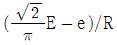
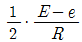
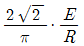
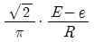
(정답률: 31%)
58. 단상 직권정류자 전동기의 설명으로 틀린 것은?
- 계자권선의 리액턴스 강하 때문에 계자권선수를 적게 한다.
- 토크를 증가하기 위해 전기자권선수를 많게 한다.
- 전기자 반작용을 감소하기 위해 보상권선을 설치한다.
- 변압기 기전력을 크게 하기 위해 브러시 접촉저항을 적게 한다.
(정답률: 52%)
59. 그림과 같은 동기발전기의 무부하 포화곡선에서 포화계수는?
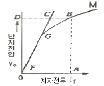
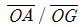
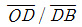
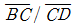
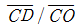
(정답률: 49%)
60. 단상 단권변압기 2대를 V결선으로 해서 3상 전압3000[V]를 3300[V]로 승압하고, 150[kVA]를 송전하려고 한다. 이 경우 단상 단권변압기 1대분의 자기용량[kVA]은 약 얼마인가?
- 15.74
- 13.62
- 7.87
- 4.54
(정답률: 31%)
4과목: 회로이론
61.
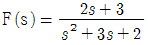
인 라플라스 함수를 시간함수로 고치면 어떻게 되는가?- e-t - 2e-2t
- e-t + te-2t
- e-t + e-2t
- 2t + e-t
(정답률: 40%)
62. 대칭 3상 교류에서 각 상의 전압이 va, vb, vc 일 때 3상전압의 합은?
- 0
- 0.3va
- 0.5va
- 3va
(정답률: 51%)
63.
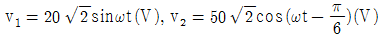
일 때, v1+v2의 실효값(V)은?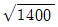
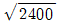
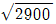
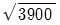
(정답률: 37%)
64. 어떤 회로의 단자 전압 및 전류의 순시값이
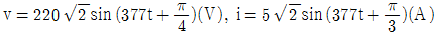
일 때, 복소 임피던스는 약 몇 Ω 인가?- 42.5-j11.4
- 42.5-j9
- 50+j11.4
- 50-j11.4
(정답률: 45%)
65. 전원과 부하가 다 같이 △결선된 3상 평형회로에서 전원전압이 200V, 부하 한 상의 임피던스가 6+j8Ω인 경우 선전류는 몇 A 인가?
- 20
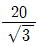
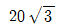
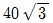
(정답률: 47%)
66. 단자전압의 각 대칭분 V0, V1, V2 가 0이 아니면서 서로 같게 되는 고장의 종류는?
- 1선 지락
- 선간 단락
- 2선 지락
- 3선 단락
(정답률: 35%)
67. 다음과 같은 전기회로의 입력을 ei, 출력을 eo 라고 할때 전달함수는? (단, T=L/R 이다.)
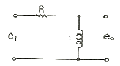
- Ts+1
- Ts2+1
- 1/Ts+1
- Ts/Ts+1
(정답률: 39%)
68. RC 회로의 입력단자에 계단전압을 인가하면 출력전압은?
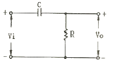
- 0 부터 지수적으로 증가한다.
- 처음에는 입력과 같이 변했다가 지수적으로 감소한다.
- 같은 모양의 계단전압이 나타난다.
- 아무 것도 나타나지 않는다.
(정답률: 46%)
69. 어떤 회로에 e=50sinωt(V)를 인가 시 i=4sin(ωt-30°)(A)가 흘렀다면 유효전력은 몇 W인가?
- 173.2
- 122.5
- 86.6
- 61.2
(정답률: 40%)
70.
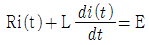
에서 모든 초기값을 0으로 하였을 때의 i(t)의 값은?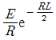
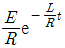
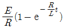
(정답률: 50%)
71. t=0 에서 스위치 S를 닫았을 때 정상 전류값(A)은?
- 1
- 2.5
- 3.5
- 7
(정답률: 47%)
72. 교류회로에서 역률이란 무엇인가?
- 전압과 전류의 위상차의 정현
- 전압과 전류의 위상차의 여현
- 임피던스와 리액턴스의 위상차의 여현
- 임피던스와 저항의 위상차의 정현
(정답률: 46%)
73. R (Ω)의 저항 3개를 Y로 접속하고 이것을 선간전압 200V의 평형 3상 교류 전원에 연결할 때 선전류가 20A 흘렀다. 이 3개의 저항을 △로 접속하고 동일전원에 연결하였을 때의 선전류는 몇 A 인가?
- 30
- 40
- 50
- 60
(정답률: 44%)
74. 비정현파에서 여현 대칭의 조건은 어느 것인가?
- f(t) = f(-t)
- f(t) = -f(-t)
- f(t) = -f(t)
(정답률: 38%)
75. 그림과 같은 회로의 출력전압 eo(t) 의 위상은 입력전압 ei(t) 의 위상보다 어떻게 되는가?
- 앞선다.
- 뒤진다.
- 같다.
- 앞설 수도 있고, 뒤질 수도 있다.
(정답률: 45%)
76. 그림과 같은 회로의 합성 인덕턴스는?
(정답률: 40%)
77. L형 4단자 회로망에서 R1, R2 를 정합하기 위한 Z1은? (단, R2 ＞ R1 이다.)
(정답률: 31%)
78. 임피던스 궤적이 직선일 때 이의 역수인 어드미턴스 궤적은?
- 원점을 통하는 직선
- 원점을 통하지 않는 직선
- 원점을 통하는 원
- 원점을 통하지 않는 원
(정답률: 41%)
79. 3μF인 커패시턴스를 50Ω의 용량성 리액턴스로 사용하려면 정현파 교류의 주파수는 약 몇 kHz 로 하면 되는가?
- 1.02
- 1.04
- 1.06
- 1.08
(정답률: 43%)
80. 그림과 같은 T형 회로의 영상 전달정수 θ는?
- 0
- 1
- -3
- -1
(정답률: 43%)
5과목: 전기설비
81. 765kV 특고압 가공전선이 건조물과 2차 접근상태로 있는 경우 전선 높이가 최저상태일 때 가공전선과 건조물 상부와의 수직거리는 몇 m 이상이어야 하는가?
- 20
- 22
- 25
- 28
(정답률: 38%)
82. 고압 옥상전선로의 저넌이 다른 시설물과 접근하거나 교차하는 경우 이들 사이의 이격거리는 몇 cm 이상이어야 하는가?
- 30
- 60
- 90
- 120
(정답률: 48%)
83. 고압 가공전선이 상부 조영재의 위쪽으로 접근시의 가공전선과 조영재의 이격거리는 몇 m 이상이어야 하는가?
- 0.6
- 0.8
- 1.2
- 2.0
(정답률: 41%)
84. 특고압 가공전선로의 중성선의 다중접지 시설에서 각 접지선을 중성선으로부터 분리하였을 경우 각 접지점의 대지 전기저항값은 몇 Ω 이하이어야 하는가?
- 100
- 150
- 300
- 500
(정답률: 41%)
85. 고압 가공전선이 가공약전류 전선과 접근하는 경우 고압가공전선과 가공약전류 전선 사이의 이격거리는 몇 cm 이상이어야 하는가? (단, 전선이 케이블인 경우이다.)
- 15
- 30
- 40
- 80
(정답률: 35%)
86. 발전기ㆍ전동기ㆍ조상기ㆍ기타 회전기(회전 변류기 제외)의 절연내력 시험시 시험전압은 권선과 대지사이에 연속하여 몇 분 이상 가하여야 하는가?
- 10
- 15
- 20
- 30
(정답률: 55%)
87. 터널에 시설하는 사용전압이 400V 이상의 저압인 경우, 이동전선은 몇 mm2 이상의 0.6/1kV EP 고무 절연 클로로프렌케이블이어야 하는가?
- 0.25
- 0.55
- 0.75
- 1.25
(정답률: 49%)
88. 전기욕기용 전원장치의 금속제 외함 및 전선을 넣는 금속관에는 제 몇 종 접지공사를 하여야 하는가?
- 제1종
- 제2종
- 제3종
- 특별 제3종
(정답률: 47%)
89. 전력보안통신용 전화설비를 시설하지 않아도 되는 경우는?
- 수력설비의 강수량 관측소와 수력발전소간
- 동일 수계에 속한 수력발전소 상호간
- 발전제어소와 기상대
- 휴대용 전화설비를 갖춘 22.9kV 변전소와 기술원 주재소
(정답률: 55%)
90. 고압용 기계기구를 시설하여서는 안 되는 경우는?
- 발전소, 변전소, 개폐소 또는 이에 준하는 곳에 시설하는 경우
- 시가지 외로서 지표상 3m인 경우
- 공장 등의 구내에서 기계 기구의 주위에 사람이 쉽게 접촉할 우려가 없도록 적당한 울타리를 설치하는 경우
- 옥내에 설치한 기계 기구를 취급자 이외의 사람이 출입할 수 없도록 설치한 곳에 시설하는 경우
(정답률: 46%)
91. 전철에서 직류귀선의 비절연부분이 금속제 지중관로와 접근하거나 교차하는 경우 상호 전식방지를 위한 이격거리는?
- 0.5m 이상
- 1m 이상
- 1.5m 이상
- 2m 이상
(정답률: 41%)
92. 애자사용 공사에 의한 고압 옥내배선의 시설에 사용되는 연동선의 단면적은 최소 몇 mm2의 것을 사용하여야 하는가?
- 2.5
- 4
- 6
- 10
(정답률: 36%)
93. 전로의 중성점을 접지하는 목적에 해당되지 않는 것은?
- 보호장치의 확실한 동작의 확보
- 부하전류의 일부를 대지로 흐르게 하여 전선 활약
- 이상전압의 억제
- 대지전압의 저하
(정답률: 43%)
94. 특고압용 변압기로서 변압기 내부고장이 발생할 경우 경보장치를 시설하여야 뱅크용량의 범위는?
- 1000kVA 이상 5000kVA 미만
- 5000kVA 이상 10000kVA 미만
- 10000kVA 이상 15000kVA 미만
- 15000kVA 이상 20000kVA 미만
(정답률: 39%)
95. 154kV 가공전선로를 제1종 특고압 보안공사에 의하여 시설하는 경우 사용 전선은 인장강도 58.84kN 이상의 연선 또는 단면적 몇 mm2 이상의 경동연선이어야 하는가?
- 35
- 50
- 95
- 150
(정답률: 48%)
96. 동일 지지물에 고압 가공전선과 저압 가공전선을 병가할 때 저압 가공전선의 위치는?
- 저압 가공전선을 고압 가공전선 위에 시설
- 저압 가공전선을 고압 가공전선 아래에 시설
- 동일 완금류에 평행되게 시설
- 별도의 규정이 없으므로 임의로 시설
(정답률: 58%)
97. 시가지에 시설하는 특고압 가공전선로의 철탑의 경간은 몇 m 이하이어야 하는가?
- 250
- 300
- 350
- 400
(정답률: 49%)
98. 지중전선로를 직접 매설식에 의하여 시설하는 경우, 차량 기타 중량물의 압력을 받을 우려가 있는 장소의 매설 깊이는 최소 몇 cm 이상이면 되는가?(2021년 KCE 변경된 규정 적용됨)
- 100
- 120
- 160
- 180
(정답률: 48%)
99. 저압 가공전선이 철도 또는 궤도를 횡단하는 경우에는 레일면상 높이가 몇 m 이상이어야 하는가?
- 5
- 5.5
- 6
- 6.5
(정답률: 52%)
100. 지중 전선로의 매설방법이 아닌 것은?
- 관로식
- 인입식
- 암거식
- 직접 매설식
(정답률: 46%)